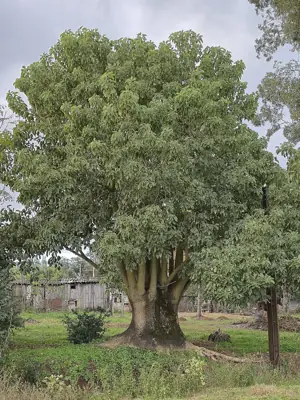

pranet · 出典付きの植物図鑑
树商陆 ☠
Phytolacca dioica L. · Phytolaccaceae

Phytolacca dioica, commonly known as ombú in Spanish and umbu in Portuguese, is a massive evergreen tree in the pokeweed family Phytolaccaceae, native to the Pampas of South America. As its specific epithet suggests, it is dioecious, with male and female flowers on separate plants. The flowers are pollinated by the butterfly Doxocopa laurentia. It has an umbrella-like canopy that spreads to a diameter of 12 to 15 m and can attain a height of 12 to 18 m. This upper growth springs up from a tuberous caudex, which can reach up to 14 m (46 ft) girth. Because it is derived from herbaceous ancestors, its trunk consists of anomalous secondary thickening rather than true wood. As a result, the ombú grows fast but its wood is soft and spongy enough to be cut with a knife. These properties have led it to be used in the art of bonsai, as it is easily manipulated to create the desired effect. Since the sap is poisonous, the ombú is not grazed by cattle and is immune to locusts and other pests. For similar reasons, the leaves are sometimes used as a laxative or purgative. It is a symbol of Uruguay, Rio Grande do Sul and Argentina, and of gaucho culture, as its canopy is quite distinguishable from afar and provides comfort and shelter from sun and rain.
出典: Wikipedia 英語版「Phytolacca dioica」 · CC BY-SA 4.0
異名: Phytolacca arborea hort. ex Moq., Pircunia dioica (L.) Moq., Sarcoca dioica (L.) Raf.
同定や利用は自己責任でお願いします。この図鑑だけを根拠に野生の植物を食べないでください。
出典
- 学名: World Flora Online Plant List 2026-06 · CC0 1.0
- 名前: Wikipedia の記事名と Wikidata · CC0 1.0（Wikidata）。記事名は事実
- 説明: Wikipedia 英語版「Phytolacca dioica」 · CC BY-SA 4.0
- 食用・毒性: World Checklist of Useful Plant Species (Diazgranados et al. 2020, RBG Kew) · CC BY 4.0
- 分布: World Checklist of Vascular Plants (WCVP), RBG Kew, version 2026-06-04 · CC BY 3.0
このページは pranet のデータから自動生成しています。コードは MIT、データは項目ごとのライセンス（説明）。